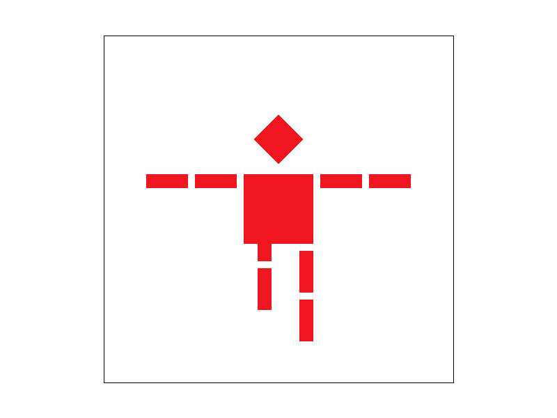
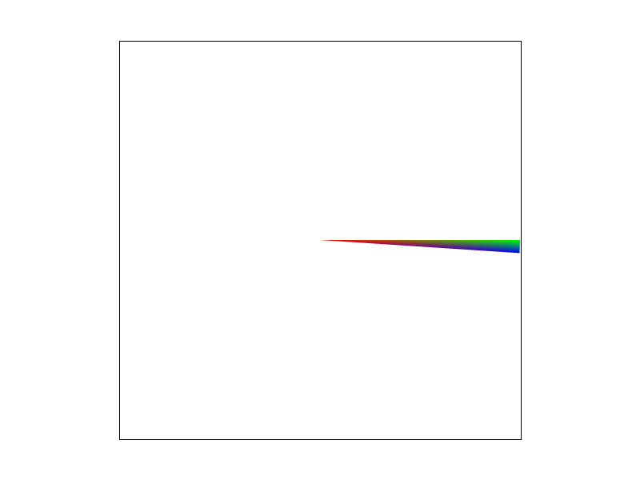
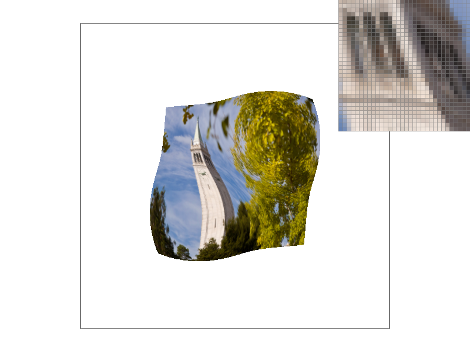
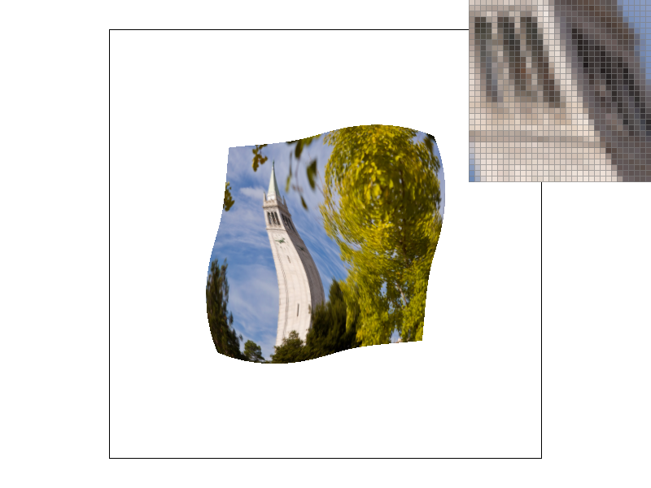
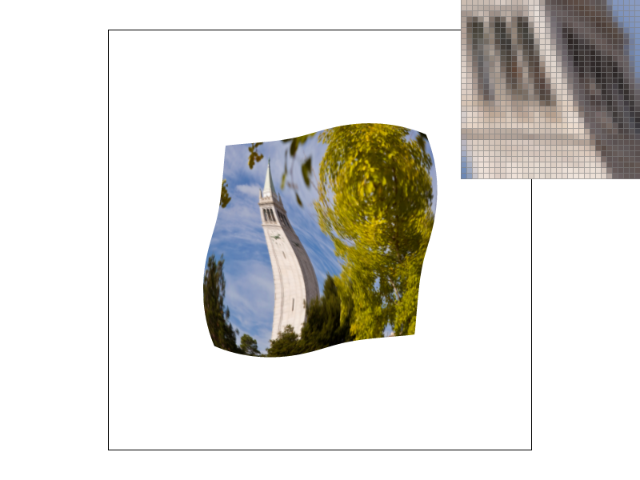

2: As described above.
3:

In this project, I implemented a rasterizer which supports basic rasterizaing operations as well as texture mapping. i have learnt the lower level working details of rasterizaing and texture mapping.
1:I first find the bounding box of the triangle. Then I iterate over all the pixels inside the bounding box and check whether the point is inside
the triangle according to the formula described in the lecture(if all 3 line equations return negative/positive at the same time then it is
inside the triangle). Then I call fill_pixel() on that pixel.
2: As described above.
3:
1:First I changed the sample_buffer so that it contains width*height*sample_rate elements, Then in rasterize_triangle(),I just evalute each "sub-pixel",
if the sub-pixel is inside the triangle, then I just record the color in the sample_buffer. Then, in resolve_to_framebuffer(), I calculate the
average color of sub-pixels inside a real pixel. I also update fill_pixel so that the function modify sample_rate number of elements in sample_buffer
on one call. Supersampling is useful for antialiasing because it rasterize the averge color on the edge of the triangle.
2: When sample rate increase, more "sub-pixels" are taken into account, which makes the edge smoother.


1:I adjust the translate parameters for the left leg to make the robot look like just jumped from the ground.

1:barycentric coordinates describe the linear interpolation of the vertices. It abstractly shows mixed relation between the selected point with
respect to all the vertices. In the following example of the triangle, the color of a certain pixel inside triangle is decided by
how close the pixel is to the 3 vertices.

2:

1:pixel sampling is sampling the color of the pixel in screen space from the texture. In rasterize_textured_triangle(), I first convert the pixel
coordinates into barycentric coordinates and call tex.sample() to get the corresponding color from texture. I also implemented two sampling methods
nearest and bilinear. For nearst, I just round the barycentric coordinates; for bilinear, I did bilinear filtering on the surrounding 4 points
to get the value.
2: From top to bottom, nearst 1/16, bilinear 1/16
:
:
:
:
3:the bilinear one is relatively smoother than nearst. There could be large difference when the graph has sharp edges. The nearst may map the pixel to
the wrong color while the bilinear will take surrounding pixels into account.